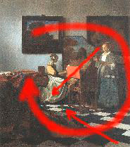

Lessons in Composition for the Art Photographer
Version 2.3, Page 11, ©2001 by Dale Cotton, all rights reserved.
Lesson Five: Wrap Up
So far we've analysed each image according to one or two of the four compositional dynamics. To wrap things up, let's examine one image from all four perspectives.
Figure 5a. The Concert by Jan Vermeer
Please take a few moments to really look at this picture to form your own impressions before I present my own. Be sure to look at every corner and crevice: there's much more going on here than may originally meet the eye. (For an even larger version click on the link above, then click on Enlarge.)
In general, where Starry Night is bursting with energy, The Concert is poised and full of grace. (There is also a subtle, playful element of humour lurking in the shadows: Notice the painting, upper right.)
Rhythm, Repetition, and Rhyme - shapes
Where Starry Night is a tiling of brush strokes, The Concert is a tiling of nearly-square rectangles. Some of the strongest are:
- The front-left table with the draped carpet
- The spinet-player on her chair
- The spinet itself together with the two other people
- Each of the two paintings on the back wall
- The back wall itself
- The rectangular portions of the back wall created by the intruding paintings, etc.
- The central orange chair back
- The rectangles created by the chair legs
- The black and white floor tiles
Another theme is the slanting diagonals from upper left to lower right:
- The front-left table with the draped carpet together with the bass viol on the floor
- The streak of window light on the back wall, the white dress, and the floor tiles
- The rhyme of blue-grey in the upper left painting, the spinet painting, and the woman's skirt to right
Which are in turn counter-poised by the opposite-moving brown diagonal formed from the carpet-draped table, the man's sash, and the upper right painting.
Rhythm, Repetition, and Rhyme - colours
We've already noted one colour rhyme - the blue-grey diagonal. In one sense The Concert has a limited pallet of oft-repeated colours: black, white, warm brown, grey-blue, creamy ochre ... and orange.
Unity vs. Fragmentation
The flat orange chair back is the central, and most disturbing element in the entire scene. It's shape is heavily rhymed, but it's colour! My eye finds muted echoes in the spinet-player's chair back and in the carpet just before the fringes near the floor, among others. The only other areas that rhyme with this orange colour, however, are in the carpet pattern atop the table. So the orange chair back is anchored ... but just barely so. To me, this near-fragmentation gives the painting its strongest dynamic. It's as if the orange chair back is the three-ace hand with which the master card shark sweeps the huge pot off the table; or the out-of-nowhere early checkmate in a grand master's game. Vermeer casually dares us to deal with it.
Lines of Attention
One could draw a rule of thirds grid and find that most elements relate, but the obvious arrangement is a left-pointing C, or three-sided square, formed by the two paintings, the spinet behind the woman in grey, the floor, and the carpet-draped table. These elements frame and tightly nest the three people.

Figure 5a. Lines of attention
For me, the white areas in the dress of the two women vie with the orange chair back for starring role in the composition.
Complexity vs. Simplicity
The repeating rectangles theme pushes this image towards simplicity and eye candy, but the sheer number of different objects and persons, with no one clearly dominating, argues the opposite case.
Yes, The Concert may be about the three people and their activity - but, if so, just barely. In another sense the painting is about the room that contains and even dominates them. (And I could wax a whole lot more artsy-fartsy than that if the mood strikes me! In the Concert I find a whole commentary - an actor's aside - about painting vs. life: the wry counterpoise between the sound that the instruments and singers suggest and the silent eye-feast that is actually there; between the movement and vitality of the living and the static permanence of a picture. For me, The Concert could aptly be sub-titled The Sound of Silence.)